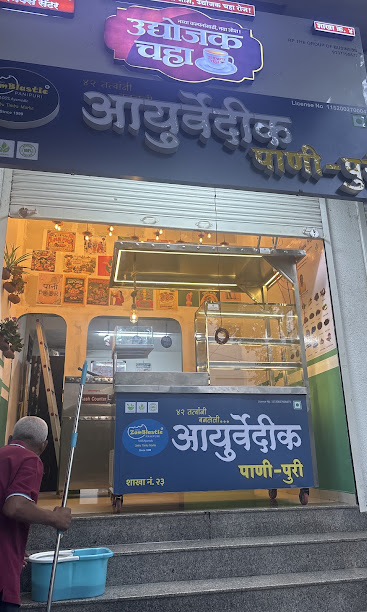
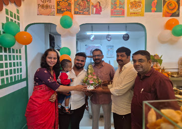

01
Distinctive
A concept designed to stand apart from the ordinary.
A distinctive take on a much-loved street-food classic. Discover Ayurvedic Pani Puri — Pune's First, in Gokhalenagar.

Ayurvedic Pani Puri brings a distinctive Ayurvedic-inspired identity to a street-food favourite. Come by, try it fresh, and discover your own favourite.
A concept designed to stand apart from the ordinary.
A food experience best enjoyed straight from the shop.
A new Pune destination in the Gokhalenagar area.

Ayurvedic Pani Puri is a new Pune food destination built around a simple idea: give a beloved street-food experience a memorable new identity.
We're starting small, staying authentic, and letting the food and customer experience build the story.
Come say hello →Real photographs from the shop. More food photography can be added as the brand grows.
Drop in, experience the concept and tell us what you think.
Gokhalenagar · Patrakar Nagar